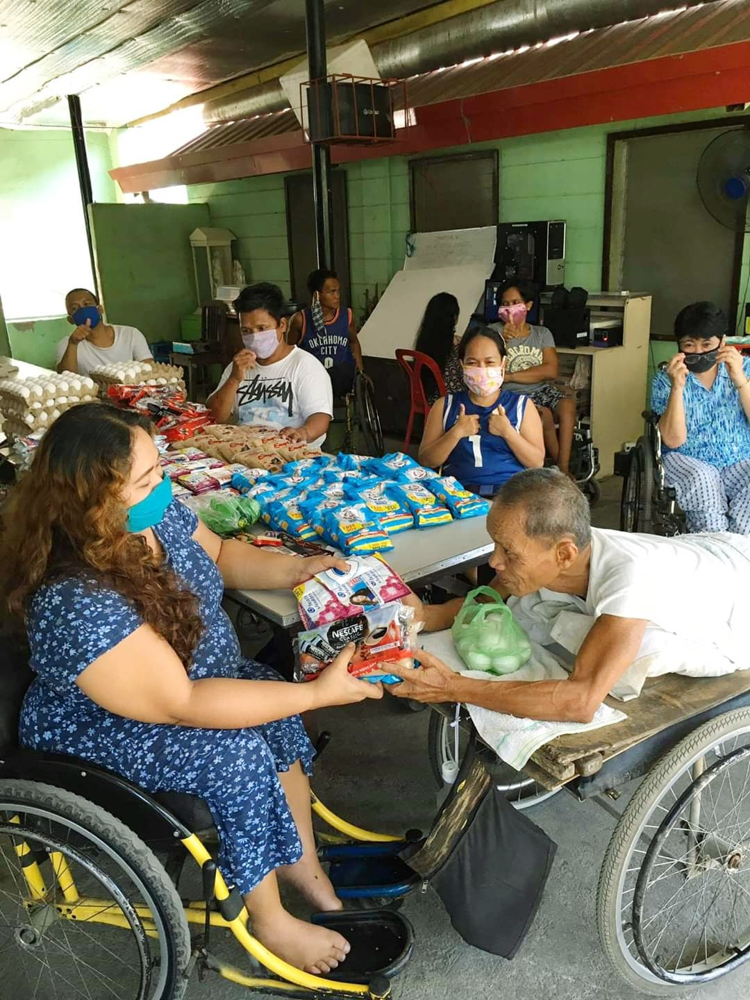

Our aim is to contribute to solving SAKADAB's issues, and also help supporting them to achieve their goals.

MISSION
The SAKADAB is an institution for physically challenged people who have different talents, skills, and abilities. The association’s goal is to support and help PWDs become self-reliant and improve their way of living, despite their disabilities. Included in their services are promoting goods that are made by the members, helping them sell their products, and also supporting them financially, morally, and spiritually. Their services, help these individuals in the institution to make a living easier and expand their skills and abilities.
HISTORY
SAKADAB was started by 27 physically challenged individuals who have different skills and talents, who were gathered from Our Lady of Victory - Training Center. The institution was created through the help of Mayor Inday Sarah Duterte with the City Government, Mr. Oscar Hidalgo, Gawad Kalinga, and the Lions Club International on July 15, 2010, as they asked for help and assistance to be able to have their own homes and own way of living.
BENEFICIARIES
The people often admitted to this institution are PDWS (People with disabilities). Members of SAKADAB are mostly 20-50 year olds, and some are senior citizens. People who reside in this community are also children, and guardians of some of the residents who live in the community. In this community, they help each other, and support each other financially through different businesses such as bakeries
and hand-craft goods.
BENEFACTORS
The institution are supported by the following people, and organizations to help them when it comes to resources such as water and electricty. These organizations/people have been supporting and providing SAKADAB since 2013.
-Mariposa Foundation
-Davao Light & Power
-Davao Fresh Foods Corporation
-Union Galvasteel Corporation
-Holcim Philippines
-Davao Shell Dealers Association
-LGU Davao City
-Aboitiz Foundation
-Coca-Cola Bottlers Philippines
-Mr. Edward Go, Dr. Magdaleno Albarracin
-Mr. Sonny Dominquez, Mr. Bien Tan